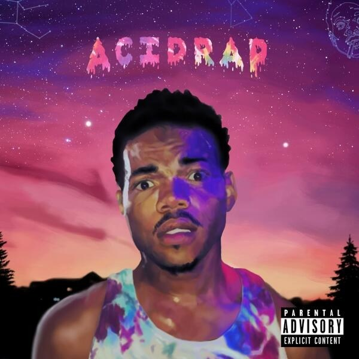
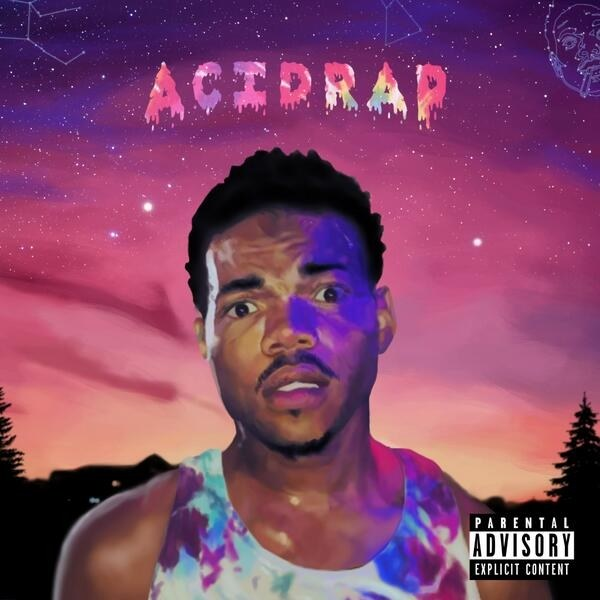
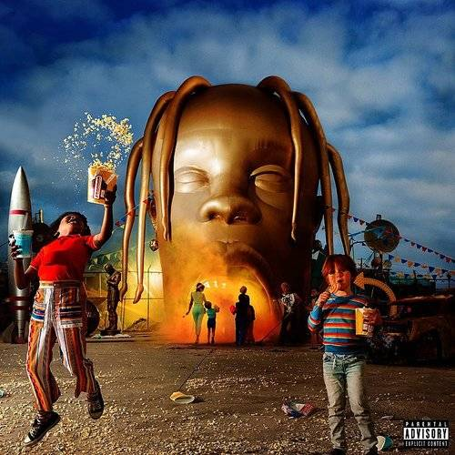
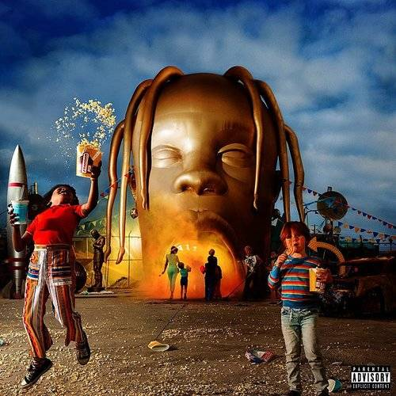

Home
Top 5 Albums of The Year
Top 5 Songs of The Year
About
1. MBDTF by: Kanye West
My Beautiful Dark Twisted Fantasies is the best album of the decade. The album was made by Kanye West who is extremely established in the rap game. This album was released on November 22, 2010. The album was highly rated by critics and by fans. The album included many futures, but it did not take away from the artist’s own performance on the album. I would highly recommend this album to any listener of music anywhere in the world. This album should be listened to by everyone.This album is definitely one of the best albums of the decade and should be recognized by most major music networks.
2. Take Care by: Drake
Take Care by Drake is the second-best album of the decade. The album was made by Drake who is extremely established in the rap game. This album was released on November 11, 2015. The album was highly rated by critics and by fans. The album included many futures, but it did not take away from the artist’s own performance on the album. I would highly recommend this album to any listener of music anywhere in the world. This album should be listened to by everyone. This album is definitely one of the best albums of the decade and should be recognized by most major music networks. Take Care is definitely deserving of second best album of the decade.
3. Acid Rap by: Chance
Acid Rap by Chance the Rapper is the third-best album of the decade. The album was made by Chance the Rapper who is extremely established in the rap game. This album was released on April 30, 2013. The album was highly rated by critics and by fans. The album included many futures, but it did not take away from the artist’s own performance on the album. I would highly recommend this album to any listener of music anywhere in the world. This album should be listened to by everyone. This album is definitely one of the best albums of the decade and should be recognized by most major music networks.
4. DAMN by: Kendrick Lamar
DAMN. by Kendrick Lamar is the fourth-best album of the decade. The album was made by Kendrick Lamar who is extremely established in the rap game. This album was released on April 14, 2017. The album was highly rated by critics and by fans. The album included many futures, but it did not take away from the artist’s own performance on the album. I would highly recommend this album to any listener of music anywhere in the world. This album should be listened to by everyone. This album is definitely one of the best albums of the decade and should be recognized by most major music networks. DAMN. is definitely deserving of fourth best album of the decade.
5. Astroword by: Travis Scott
Astroworld by Travis Scott is the fifth-best album of the decade. The album was made by Travis Scott who is extremely established in the rap game. This album was released on August 3, 2018. The album was highly rated by critics and by fans. The album included many futures, but it did not take away from the artist’s own performance on the album. I would highly recommend this album to any listener of music anywhere in the world. This album should be listened to by everyone. This album is definitely one of the best albums of the decade and should be recognized by most major music networks.
 

 
